tener
Have · actions · Short contextual question
Tengo una llave. Necesito un boleto.
I have a key. I need a ticket.
¿Qué tengo?
What do I have?
llaveKey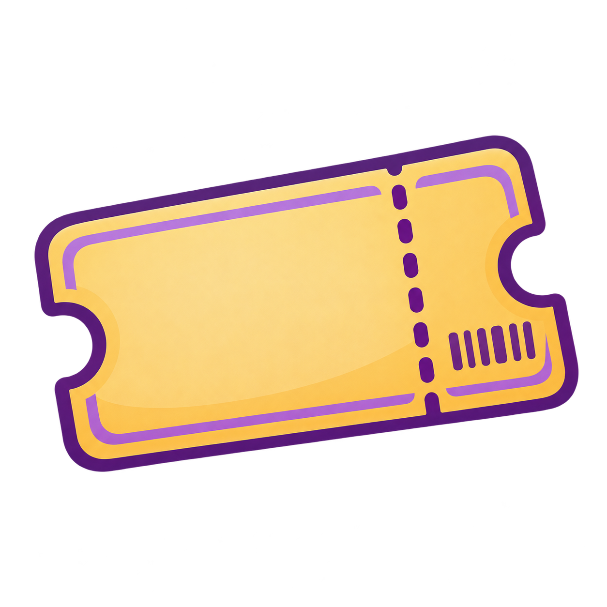
boletoTicket pasaportePassport
pasaportePassport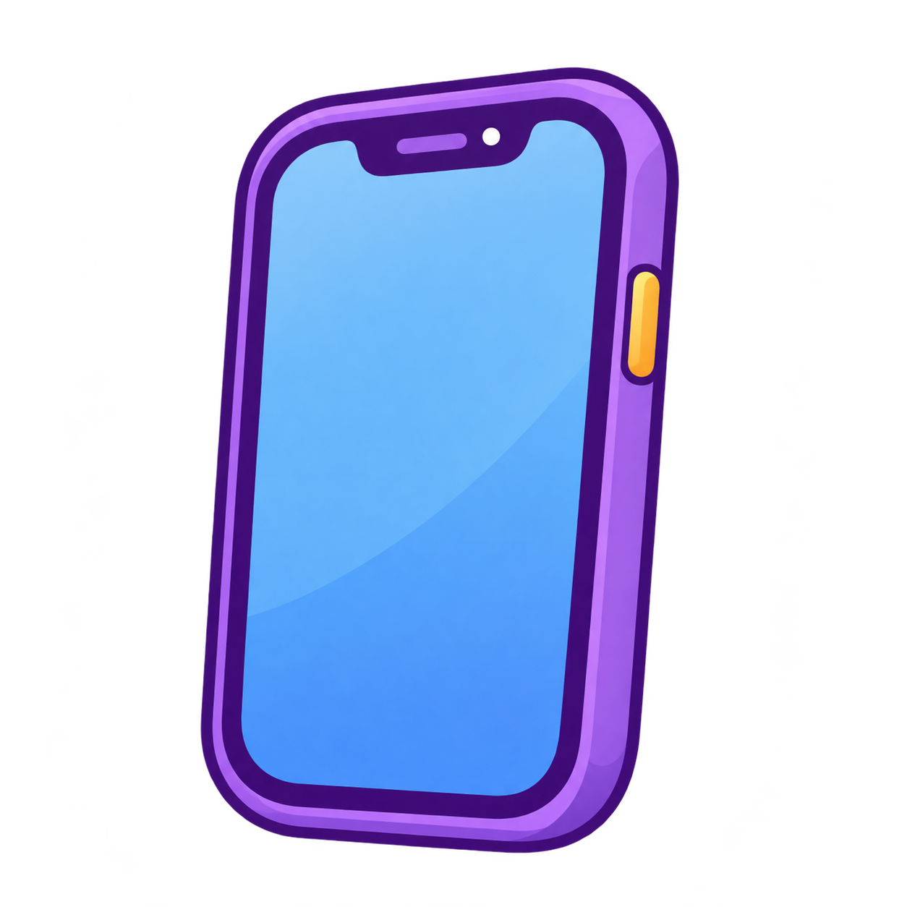
teléfonoPhone Answer and explanation
llave
The key is possessed; the ticket is needed.
querer
Want · actions · Short contextual question
Tengo agua. Quiero café.
I have water. I want coffee.
¿Qué quiero?
What do I want?
 caféCoffee
caféCoffee aguaWater
aguaWater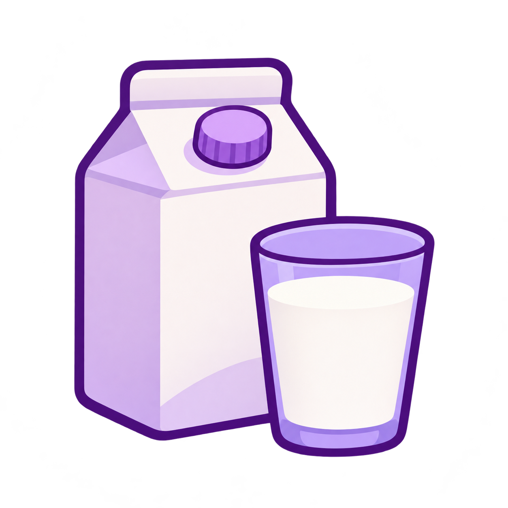
lecheMilk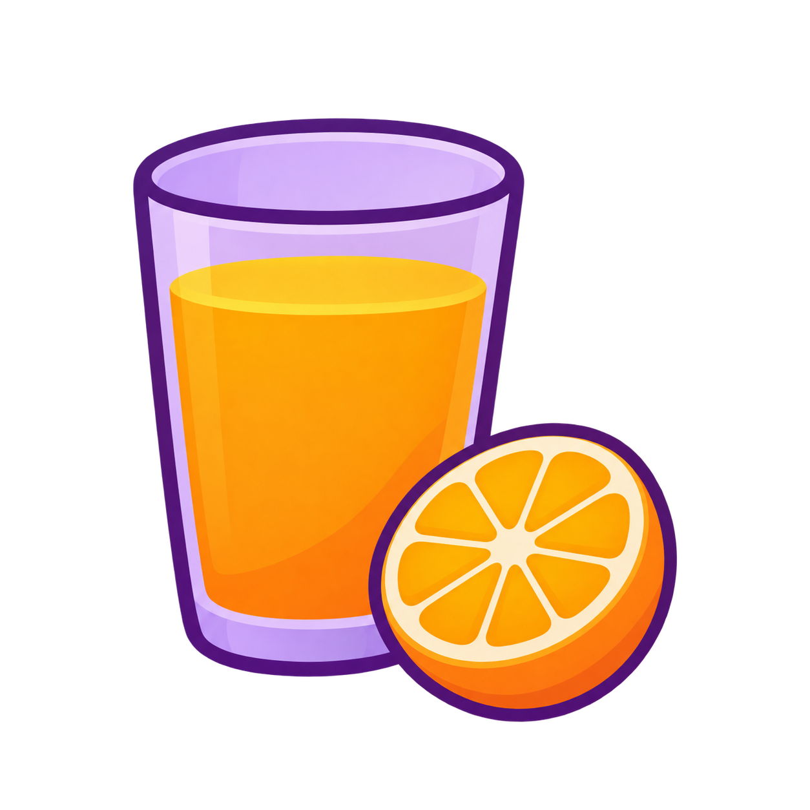
jugoJuiceAnswer and explanation
café
The desired drink is coffee; the water is already possessed.
necesitar
Need · actions · Short contextual question
Tengo dinero. Necesito un boleto.
I have money. I need a ticket.
¿Qué necesito?
What do I need?
boletoTicketdineroMoneyllaveKeypasaportePassport Answer and explanation
boleto
The ticket is needed; the money is already possessed.
ir
Go · actions · Short contextual question
Voy al hotel. No voy a la playa.
I am going to the hotel. I am not going to the beach.
¿Adónde voy?
Where am I going?
 hotelHotel
hotelHotel playaBeach
playaBeach aeropuertoAirport
aeropuertoAirport restauranteRestaurant
restauranteRestaurantAnswer and explanation
hotel
The hotel is the stated destination; the beach is explicitly excluded.
llevar
Carry / take · actions · Short contextual question
Llevo una mochila. La maleta está en el hotel.
I am carrying a backpack. The suitcase is at the hotel.
¿Qué llevo?
What am I carrying?
 mochilaBackpack
mochilaBackpack maletaSuitcasepasaportePassportteléfonoPhone
maletaSuitcasepasaportePassportteléfonoPhoneAnswer and explanation
mochila
The backpack is carried; the suitcase is elsewhere.
comprar
Buy · actions · Short contextual question
Compro pan. No compro arroz.
I am buying bread. I am not buying rice.
¿Qué compro?
What am I buying?
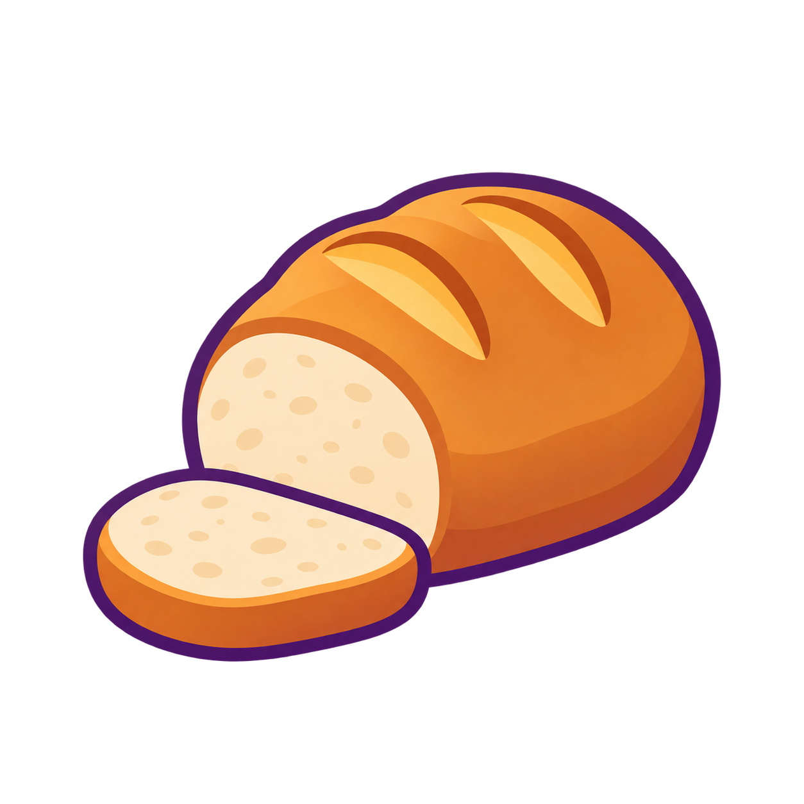
panBread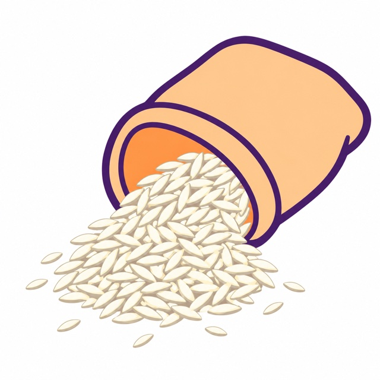
arrozRicelecheMilkjugoJuiceAnswer and explanation
pan
Bread is bought; rice is explicitly excluded.
comer
Eat · actions · Picture card
Picture concept: Kiku taking a visible bite of bread; mouth and food contact clearly show eating.
beber
Drink · actions · Picture card
Picture concept: Kiku actively sipping from a plain glass of water; no coffee cup or other food.
grande
Big · descriptions · Picture card
Picture concept: Approved Kiku relative-size illustration emphasizes the larger character. Review alongside the small counterpart.
Approved artwork reuse candidate: ja-v-f6377dcbb564
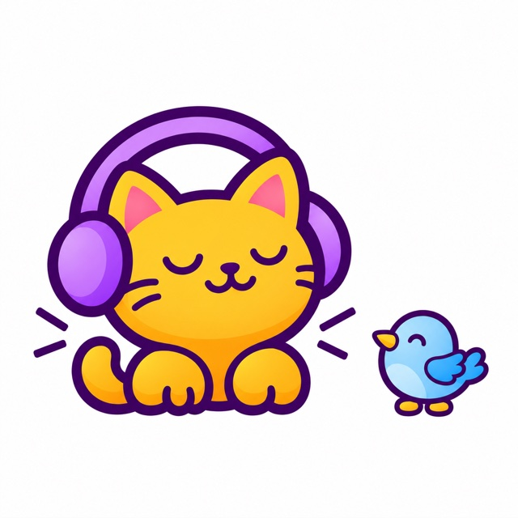
pequeño
Small · descriptions · Picture card
Also: pequeña
Picture concept: Approved matching Kiku relative-size illustration emphasizes the smaller character.
Approved artwork reuse candidate: ja-v-769a80524957
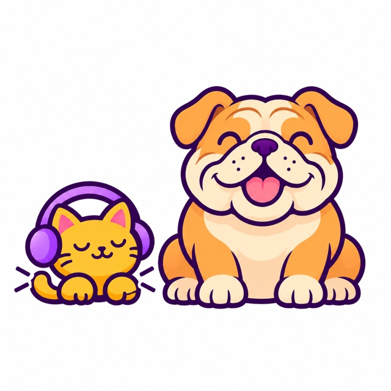
frío
Cold · descriptions · Picture card
Also: fría
Picture concept: A glass of water with ice cubes and condensation, paired with a simple blue low thermometer. No snow scene.
caliente
Hot · descriptions · Picture card
Picture concept: The matching glass with clearly rising steam and a red high thermometer; no flame or coffee-specific cues.
abierto
Open · descriptions · Picture card
Also: abierta
Picture concept: Approved open-door illustration. Physical open state, not business opening hours.
Approved artwork reuse candidate: ja-v-12025d56c403
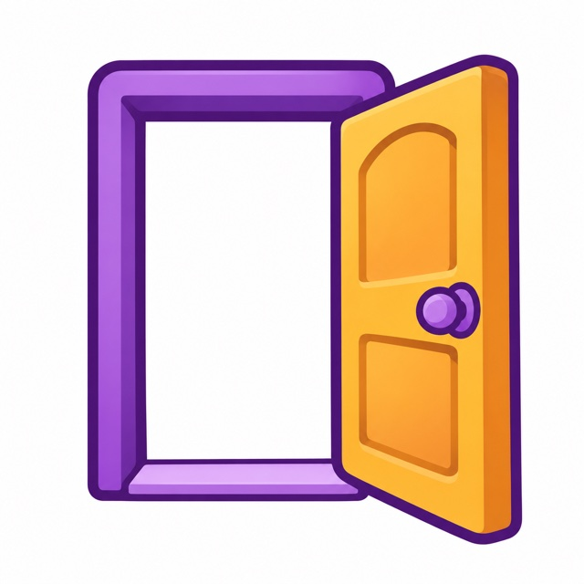
cerrado
Closed · descriptions · Picture card
Also: cerrada
Picture concept: Approved matching closed-door illustration. Physical closed state, not business opening hours.
Approved artwork reuse candidate: ja-v-56e27b2da5a6
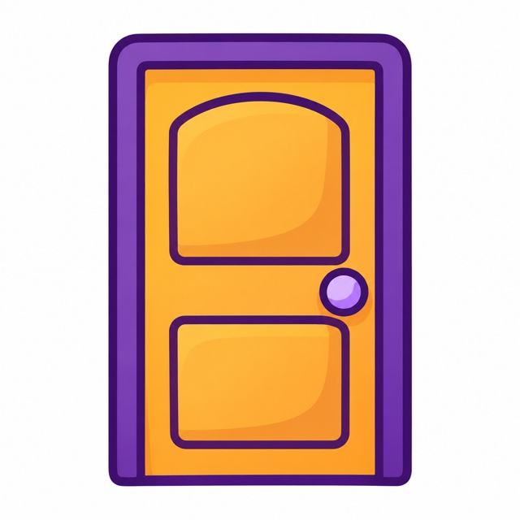
dentro de
Inside · locations · Picture card
Picture concept: Kiku sitting clearly inside an open box, with the front wall partly cut away so Kiku is visible within the box. Keep Kiku and the box fully in frame. Use the same box, Kiku proportions, colors and viewing angle as the next-to card. No key, backpack, words or arrows.
encima de
On top of · locations · Picture card
Picture concept: Approved Kiku sitting on top of a chair. Review spatial meaning independently from the chair noun.
Approved artwork reuse candidate: ja-v-c0f58bfab324
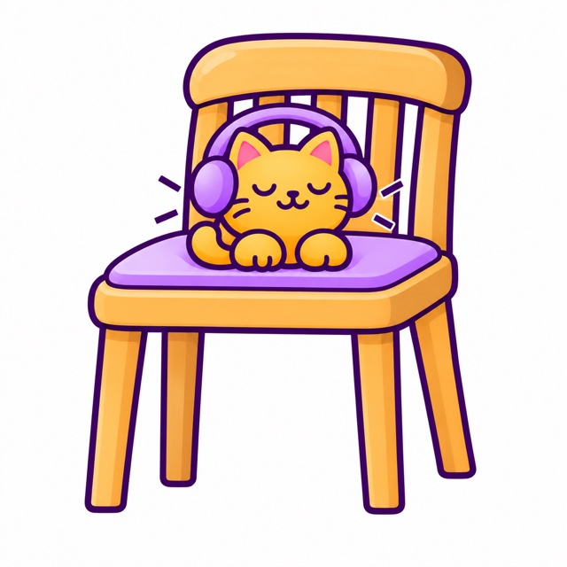
Review transfer between chair/character imagery and key/backpack examples; exclude chair/scene collisions if packs mix.
debajo de
Under · locations · Picture card
Picture concept: Approved matching Kiku under the same chair; character and furniture remain identifiable.
Approved artwork reuse candidate: ja-v-520308b3c3b4
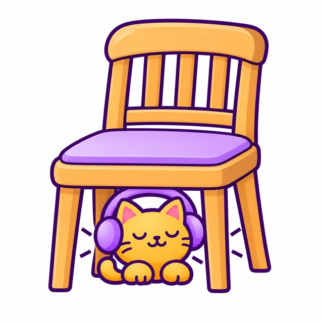
Review transfer between chair/character imagery and key/backpack examples; exclude chair/scene collisions if packs mix.
al lado de
Next to · locations · Picture card
Picture concept: Kiku sitting on the ground beside the same open box used for the inside card, entirely outside it with a clear gap. Match Kiku proportions, box size, colors and viewing angle; Kiku and the box share the same ground level. No key, backpack, words or arrows.
hambre
Hunger · needs · Picture card
Tengo hambre.
Picture concept: Kiku holding an empty stomach and looking at bread in a thought bubble; not actively eating.
sed
Thirst · needs · Picture card
Tengo sed.
Picture concept: Kiku with a dry mouth, looking at a water glass in a thought bubble; not actively drinking.
sueño
Sleepiness · needs · Picture card
Tengo sueño.
Picture concept: Kiku yawning with drooping eyelids beside a bed; awake, not asleep; no dream bubble.
Sleepiness in tener sueño; not a dream.
hoy
Today · time · Short contextual question
Hoy voy al hotel. Mañana voy a la playa.
Today I am going to the hotel. Tomorrow I am going to the beach.
¿Adónde voy hoy?
Where am I going today?
hotelHotelplayaBeachaeropuertoAirportrestauranteRestaurant Answer and explanation
hotel
Today selects the hotel, not tomorrow’s beach destination.
mañana
Tomorrow · time · Short contextual question
Hoy voy a la playa. Mañana voy al aeropuerto.
Today I am going to the beach. Tomorrow I am going to the airport.
¿Adónde voy mañana?
Where am I going tomorrow?
aeropuertoAirportplayaBeachhotelHotelrestauranteRestaurant Answer and explanation
aeropuerto
Tomorrow selects the airport, not today’s beach destination.
Tomorrow only; mañana meaning morning is a separate sense.
después
Afterward · time · Short contextual question
Compro pan. Después compro leche.
I buy bread. Afterward I buy milk.
¿Qué compro después?
What do I buy afterward?
lecheMilkpanBreadarrozRicejugoJuice
Answer and explanation
leche
Milk is bought after bread.